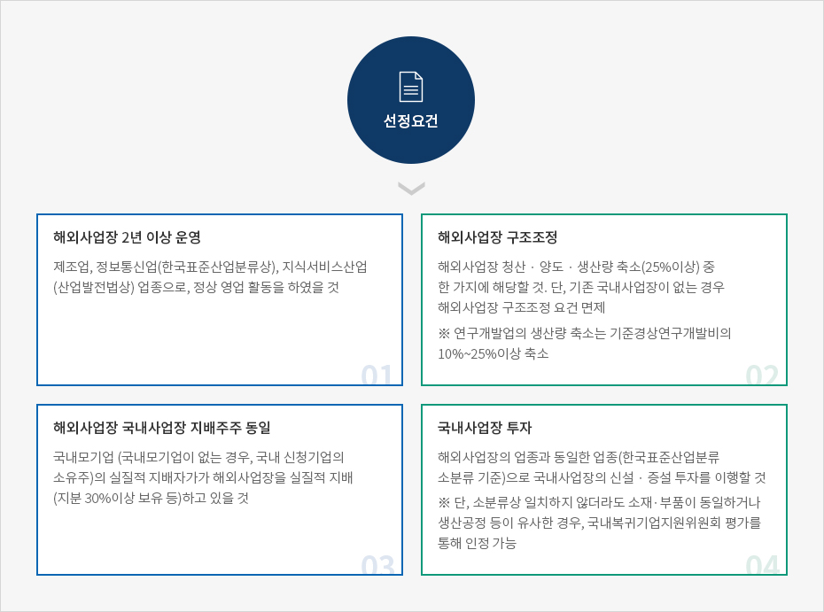
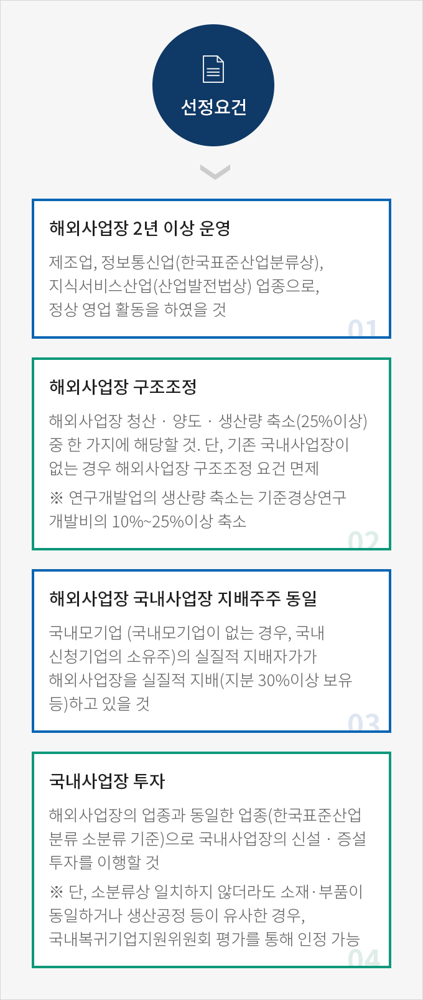

국내복귀기업이란
- Home
- 국내복귀기업지원
- 사업소개
- 지원대상
국내복귀기업이란
‘국내복귀’란 해외진출기업이 해외사업장을 청산･양도 또는 축소 (국내에 사업장이 없는 해외진출기업은 해외사업장을 유지하는 경우를 포함)하고, 대통령령으로 정하는 바에 따라 해외사업장에서 생산하는 제품과 같은 제품을 생산하는 사업장을 국내에 신설･증설하는 것을 말한다. (해외진출기업의 국내복귀 지원에 관한 법률 제2조 및 하위법령에 규정)



선정요건
- 해외사업장 2년 이상 운영 제조업, 정보통신업(한국표준산업분류상), 지식서비스산업(산업발전법상) 업종으로, 정상 영업 활동을 하였을 것
- 해외사업장 구조조정 해외사업장 청산·양도·생산량 축소(25% 이상) 중 한 가지에 해당할 것 단, 기존 국내사업장이 없는 경우 해외사업장 구조조정 요건 면제 * 연구개발업의 생산량 축소는 기준경상연구개발비의 10%~25% 이상 축소
- 해외사업장 국내사업장 지배주주 동일 국내모기업(국내모기업이 없는 경우, 국내 신청기업의 소유주)의 실질적 지배자가 해외사업장을 실질적 지배(지분 30% 이상 보유 등)하고 있을 것
- 국내사업장 투자 해외사업장의 업종과 동일한 업종(한국표준산업분류 소분류 기준)으로 국내사업장의 신설·증설 투자를 이행할 것 * 단, 소분류상 일치하지 않더라도 소재·부품이 동일하거나 생산공정 등이 유사한 경우, 국내복귀기업지원위원회 평가를 통해 인정 가능

※ 단, 「외국인투자 촉진법」에 따른 외국인투자에 대한 지원 혜택(조세 · 임대료 감면 등)을 받은 기업이 아닐 것